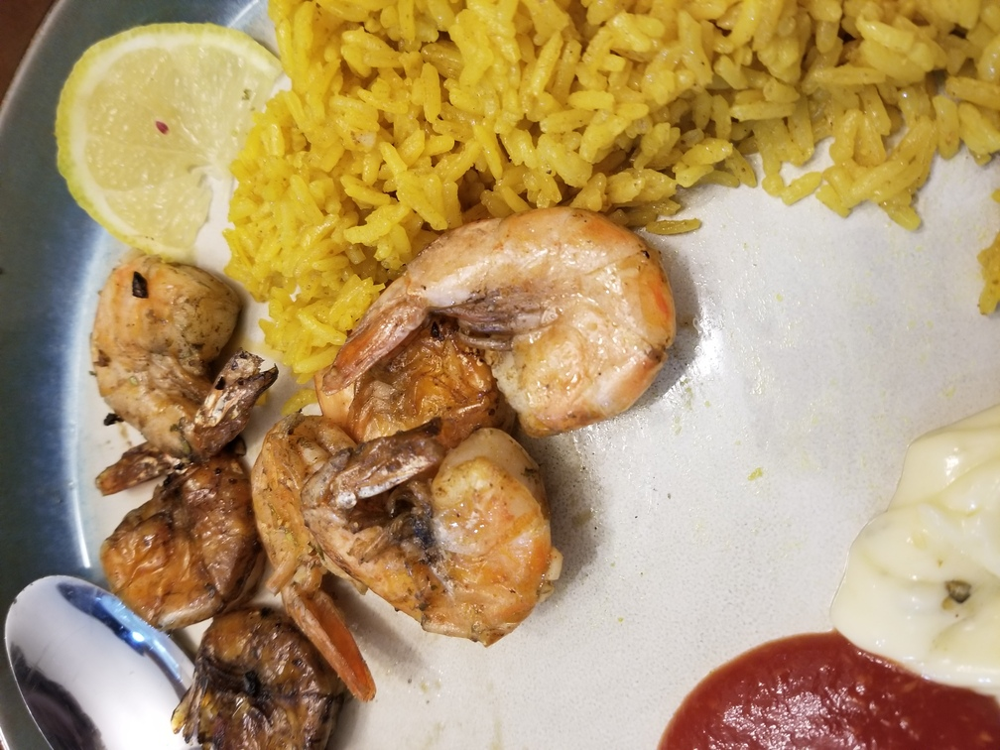

Grilled Lemon Garlic Shrimp
Originally from: all recipes
Ingredients
- 1 pound frozen shrimp, thawed and peeled
- 1/4 cup olive oil
- 1 tablespoon minced garlic
- 2 teaspoons lemon juice
- 1/4 teaspoon pepper
- 1 pinch finely chopped parsley
- metal skewers
- cooking spray
Directions
- Defrost shrimp if using frozen.
- Combine all ingredients and marinate for 2 hours.
- Cook on grill.
Notes
-
2020-11-22 - Followed this techinique and cooked in "kabob baskets" over hot charcol. Used frozen "easy peel" shrimp and they turned out good.
